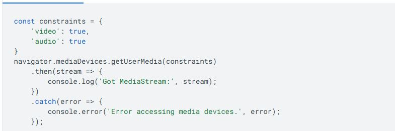

How is WebRTC Used?
Developers use WebRTC to create video and audio chat features on websites and web apps. One of the most common uses is in video conferencing tools like Google Meet or Microsoft Teams. WebRTC allows these platforms to connect users quickly without needing to install anything
Developers also can use webrtc by using JavaScript to access the user’s microphone or camera. Here's an example
This code allows a user’s video and audio to be shown on the screen. developers can connect streams between two people, record them, or send data.
Webrtc can also be used for real-time screen sharing, online video games chat where instant communication is important. WebRTC runs directly in the browser which makes the user experience way better.